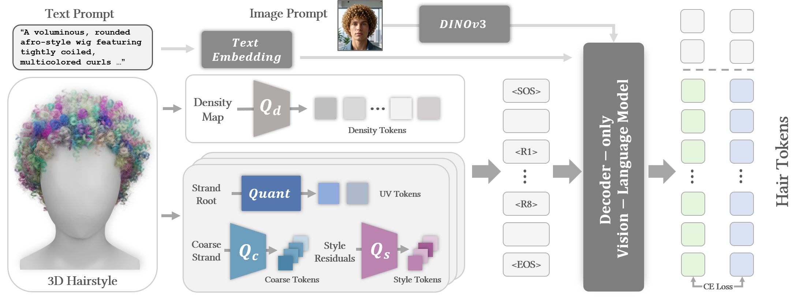
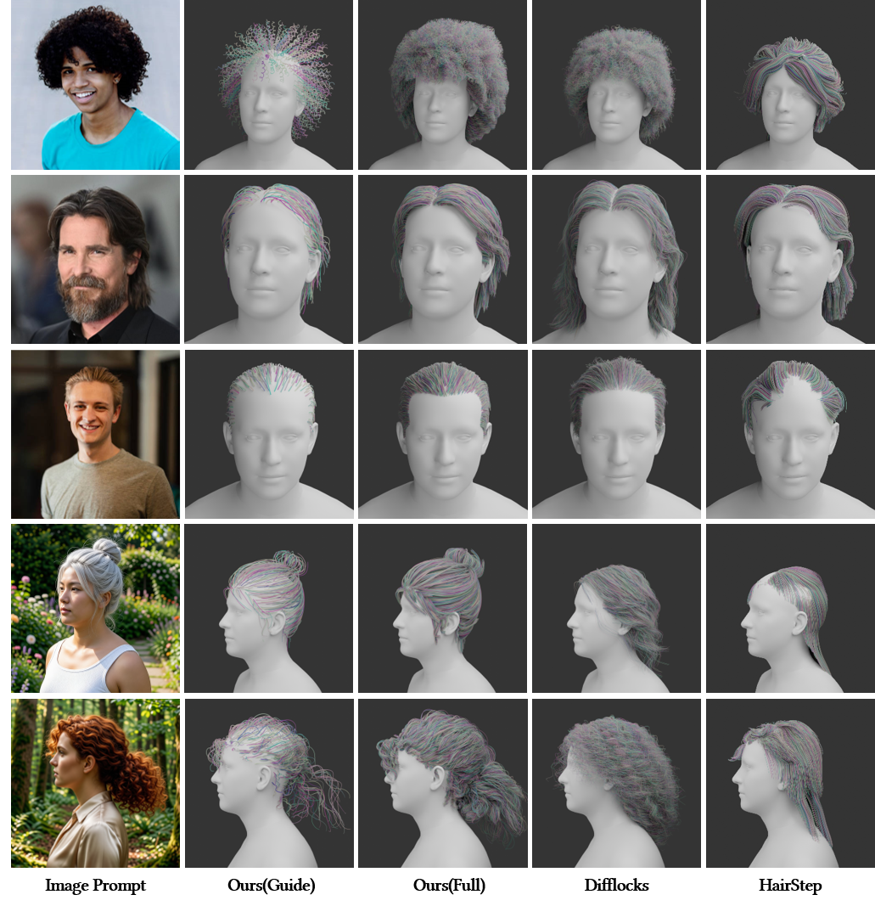
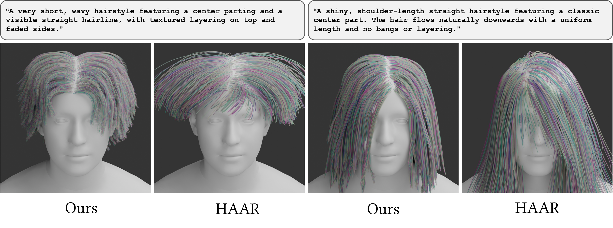
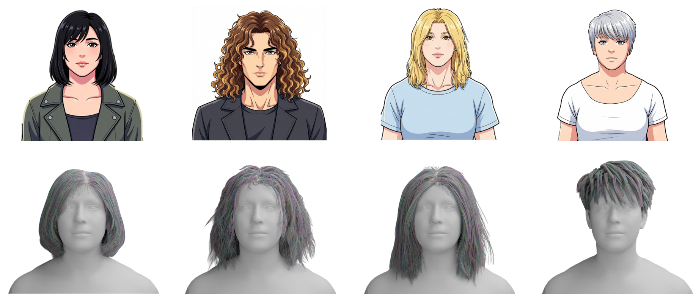
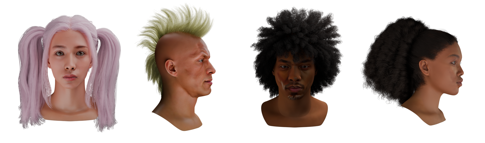
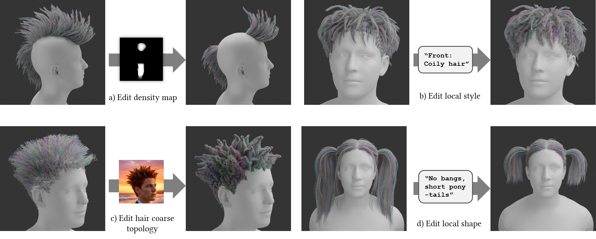

1. Strand-as-language modeling for hair generation
A paradigm shift to strand-as-language modeling, reformulating 3D realistic hair generation as a dual-decoupled autoregressive problem and treating strands as the core generative units.
Hair is a rich visual and cultural signal, yet its digital modeling remains challenging due to the duality of fluidity and structure. Existing generative approaches largely rely on continuous diffusion fields, which entangle global topology with local texture and obscure the inherent semantic and structural organization of hairstyles. To address this, we propose HairGPT, a strand-centric framework that treats authentic strands as generative primitives and formulates 3D hair synthesis as a dual-decoupled autoregressive sequence modeling problem. Our method applies spatial decoupling across semantic scalp regions and structural decoupling along a hierarchical strand representation, progressing from global layout to fine-grained style. We further introduce a geometric tokenizer and region-aware semantic annotations to guide strand-level generation, enabling compositional editing, robust synthesis of rare or complex hairstyles, and adaptation to stylized domains. By aligning generative modeling with the cognitive workflow of human artists, HairGPT transforms hair generation from opaque texture synthesis into a transparent, structured, and semantically meaningful process. We demonstrate that this framework supports robust semantic conditioning and compositional editing, enabling the high-fidelity generation of rare, complex hairstyles and effective adaptation to stylized domains.
A paradigm shift to strand-as-language modeling, reformulating 3D realistic hair generation as a dual-decoupled autoregressive problem and treating strands as the core generative units.
A novel geometric tokenization scheme for guide strands, using multi-head product quantization to encode complex topological structures and high-frequency textures into a compact discrete vocabulary.
A hierarchical strand language construction strategy with multi-stage training, organizing generation into region-aware sequences to improve structural coherence and support stable convergence.

The 3D hairstyle geometry is decomposed into a global density map, quantized by tokenizer Qd, and local strand features. Specifically, strand roots are encoded into 2 UV tokens. The strand geometry is further decoupled into coarse shape and style residuals, which are discretized into 4 tokens via tokenizers Qc and Qs. These geometric codes are assembled into a hierarchical sequence and processed by a decoder-only Transformer. After being concatenated and conditioned on text and image embeddings, the model autoregressively predicts the target hair tokens and is supervised with a cross-entropy loss.

Image-guided hairstyle synthesis comparison. HairGPT can effectively generate extremely high-frequency coils and complex hair topology following the image, especially for buns and ponytails. We visualize both the raw guide strands directly output by our model and the dense strands produced via a simple interpolation algorithm; note that this upsampling process is employed solely for visualization and is not the primary focus of this work.

Text guided hairstyle synthesis comparison. Our HairGPT produces 3D hairstyles that adhere to fine-grained semantic instructions.

Cross-domain adaptation to stylized characters. Our framework adapts to 2D cartoon inputs via fine-tuning. It generates plausible 3D strand arrangements that faithfully respect the volume and flow of the original anime portraits.

Realistic Avatar Creation. Our model can collaboratively work with the 3D face synthesis model DreamFace to produce photorealistic avatars with unified visual aesthetics.

Editing. Our dual-decoupled representation and vision-language model naturally facilitates diverse editing applications, either image or text prompt.
This work was supported in part by the National Natural Science Foundation of China under Grant W2431046, Central Guided Local Science and Technology Foundation of China YDZX20253100001001, and by MoE Key Lab of Intelligent Perception and Human-Machine Collaboration (ShanghaiTech University), the Shanghai Frontiers Science Center of Human-centered Artificial Intelligence. This work was also supported by the HPC Platform of ShanghaiTech University.
The authors would also like to thank Heng'an Zhou from ShanghaiTech University for his assistance with the supplementary video, and Zijun Zhao from Deemos Technology Co., Ltd. for helping process part of the raw hairstyle data.
@misc{luo2026hairgpt,
title={HairGPT: A Unified Autoregressive Framework for 3D Realistic Hairstyle Synthesis},
author={Luo, Haimin and Ouyang, Min and Xu, Lan and Yu, Jingyi},
year={2026},
note={Conditionally accepted by SIGGRAPH 2026 (journal track)}
}